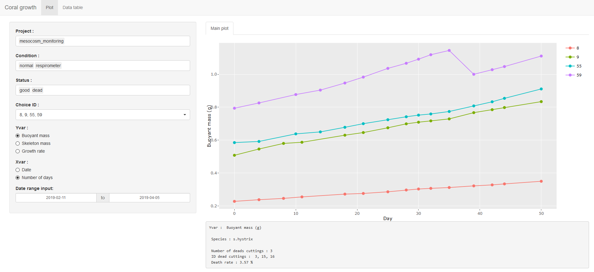
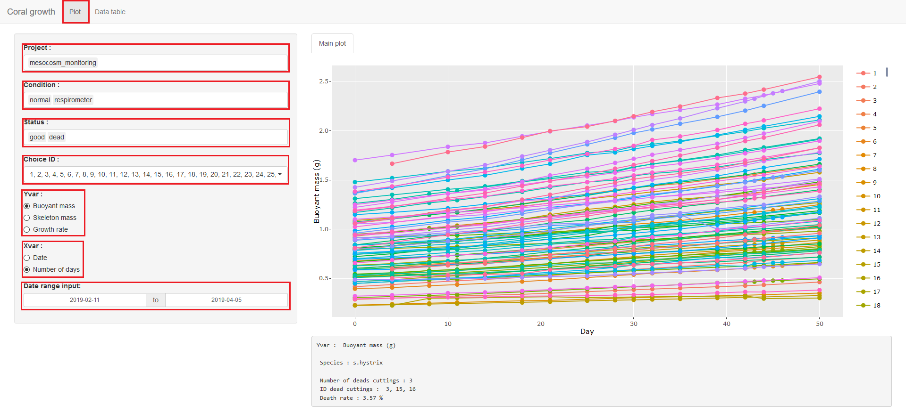
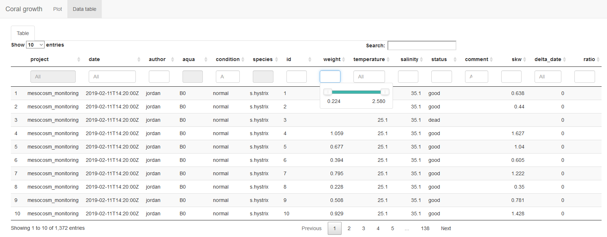

Aide pour l’application ‘CoralGrowth’
Benrezkallah Jordan
2019-04-29
Chapitre 1 Utilisateur
L’application Coral Growth permet de suivre l’évolution de la croissance de boutures de corail à partir de l’URL d’un Googlesheets.
Ce chapitre est destiné à ceux désirant de comprendre l’utilisation de l’application. Dans le chapitre, il y aura des explications destiné à ceux voulant comprendre le fonctionnement de l’application.
1.1 Tableur Googlesheets
Afin de mieux comprendre comment fonctionne l’application, il est important de connaître le jeu de donnée (dataframe).
Le tableur est divisé en 12 colonnes :
- project : différencie chaque expérience réalisée, généralement on recréera un nouveau tableur pour chacune des expériences
- date : date et heure à laquelle les relevés de mesures ont été pris
- author : nom de la personne ayant encodé dans le tableur
- aqua : nom du mésocosme où la bouture a été prélevé
- condition : condition spécifique appliquée à la bouture (exemple : stress hypersalin)
- species : nom de l’espèce mesurée
- id : numéro de la bouture mesurée
- weight : masse immergée mesurée
- temperature : température de l’eau de mer
- salinity : salinité de l’eau de mer
- status : état de santé de la bouture
- comment : commentaire
1.2 Onglet graphique
Le premier onglet “Plot”, permet la visualisation sous forme de graphique de la croissance du corail. 
1.3 Paramètres
On peut filtrer sur différents paramètres :
- projet
- condition
- statut
- ID
- Yvar
- Xvar
- période de temps
 Les 3 premiers paramètres project, condition, status peuvent être sélectionné depuis un menu déroulant, pour supprimer une valeur il suffit de cliquer sur la valeur et d’appuyer sur la touche SUPPR.
Le choix des ID se fait via un menu déroulant qui permet de les sélectionner un par un ou de tout sélectionner/désélectionner.
Yvar permet de calculer le graphique en fonction de l’ordonnée désirée. Buoyant mass correspond à la masse immergée brute de la bouture.Skeleton mass correspond à la masse squelettique de la bouture. Elle est calculée à partir de la masse immergée, de la salinité et de la température à l’aide de la formule ci-dessous mise au point par Jokiel et al (1978) : \[\begin{equation} \large m_{squelettique} = \frac {m_{immerge}}{ \frac{1 - \rho_{eau}}{ \rho_{squelettique}}} \end{equation}\]
\(\rho_{eau}\) est déterminé via l’équation d’état de l’eau de mer grâce à la mesure de la salinité et de la température. Le \(\rho_{squelettique}\) est la densité de l’aragonite(CaCO3) du squelette du corail.
Growth rate correspond au taux de croissance. Elle est calculée à partir de la masse squelettique et de la date :
Xvar permet de calculer le graphique en fonction de l’abscisse désirée. Date correspond à l’affichage en fonction du jour au format MMM-dd (exemple :Feb 15). Number of days correspond à l’affichage en fonction du nombre de jours écoulés depuis la première date. Il y a un arrondi au jour près.
Date range input permet de sélectionner une période donnée.
1.4 Graphique
En passant son curseur sur les points du graphique, on peut obtenir des informations supplémentaires. On peut également désélectionner les lignes en cliquant sur le numéro associer à la couleur de l’ID à droite de l’écran.
En bas du graphique des informations supplémentaires sont données :
- Yvar : l’ordonnée du graphique
- Species : l’espèce des boutures
- Number of deads cuttings : le nombre de boutures mortes
- ID dead cuttings : l’ID des boutures mortes
- Death rate : le taux de mortalité
1.4.1 Onglet tableau de donnée
Le deuxième onglet “Data table”, permet de visualiser le tableau de donnée, certaines colonnes ont été calculées. On peut le trier en fonction de chacune des colonnes.

1.5 Accéder à l’application
Il est possible d’accéder à l’application depuis cette URL : https://jack177.shinyapps.io/coralgrowth/
Ou en scannant ce QRcode :